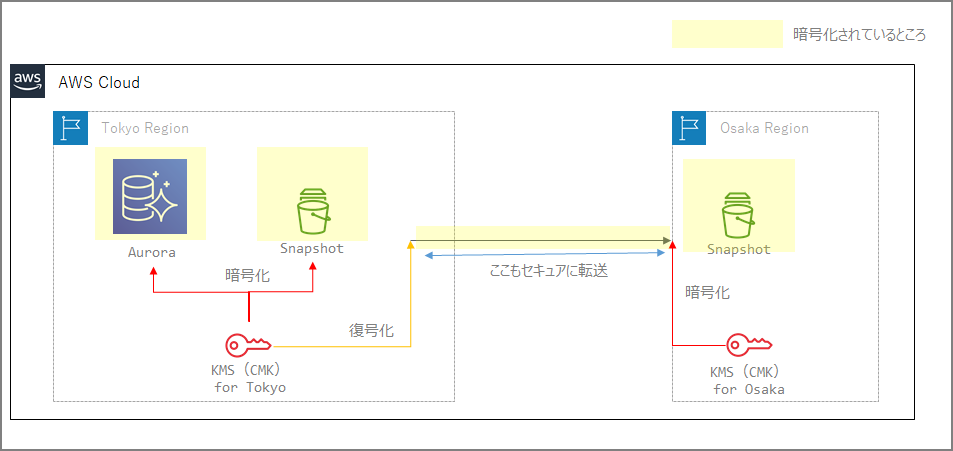

AWSにおける暗号化されたバックアップのリージョン間コピー
-
KMSはリージョン内に閉じたサービスであるため、暗号化されたスナップショットを転送する場合は、一度転送元のリージョンで復号され、転送先の別のCMKで暗号化されることとなる。
- 多くのサービスでリージョン間コピーする際に宛先リージョンのKMSのCMKを指定することとなる。
- リージョン間の転送もセキュアとなる。（利用者は意識しないところ）
-
イメージ図

マニュアル
AWS Backup
https://docs.aws.amazon.com/ja_jp/aws-backup/latest/devguide/cross-region-backup.html
AWS Backup は、コピー先のボールトの顧客管理キーを使用してコピーを再暗号化します。
Redshift の場合
スナップショットがターゲットの AWS リージョンにコピーされる前に、Amazon Redshift はソースの AWS リージョンでマスターキーを使用してスナップショットを復号し、Amazon Redshift が内部で管理しているランダムに生成された RSA キーを使用して一時的に再暗号化します。その後、Amazon Redshift は安全なチャンネル経由でターゲットの AWS リージョンにコピーし、が内部で管理している RSA キーを使用してスナップショットを復号してから、ターゲットの AWS リージョンでマスターキーを使用してスナップショットを再暗号化します。
Auroraの場合
https://docs.aws.amazon.com/ja_jp/AmazonRDS/latest/AuroraUserGuide/USER_CopySnapshot.html
AWS KMS カスタマーマスターキー (CMK) を使用して暗号化されたスナップショットをコピーできます。暗号化された スナップショットをコピーする場合は、スナップショットのコピーも暗号化する必要があります。同じ AWS リージョン内で暗号化されているスナップショットをコピーする場合、元のスナップショットと同じ AWS KMS CMK を使用してコピーを暗号化できます。または、別の CMK を指定することもできます。リージョン間で暗号化されているスナップショットをコピーする場合、ソーススナップショットに使用されているのと同じ AWS KMS CMK をコピーに使用することはできません。なぜなら、AWS KMS CMK はリージョン固有だからです。代わりに、ターゲット AWS リージョンで有効な AWS KMS CMK を指定する必要があります。
RDSの場合
https://docs.aws.amazon.com/ja_jp/AmazonRDS/latest/UserGuide/Overview.Encryption.html
ある AWS リージョンから別のリージョンに暗号化されたスナップショットをコピーするには、コピー先の AWS リージョンの CMK を指定する必要があります。これは、CMK が、作成される AWS リージョンに固有であるためです。
ソーススナップショットは、コピープロセス中も暗号化されたままになります。Amazon RDS は、コピープロセス処理中にエンベロープ暗号化を使用してデータを保護します。エンベロープ暗号化の仕組みの詳細については、AWS Key Management Service デベロッパーガイドの「エンベロープ暗号化」を参照してください。
注意点
別の AWS リージョンへの自動バックアップのレプリケーションという機能がRDSにあるが、この機能は暗号化されているDBインスタンスではサポートされていないので注意。
https://docs.aws.amazon.com/ja_jp/AmazonRDS/latest/UserGuide/USER_ReplicateBackups.html
バックアップレプリケーションは、次のデータベースエンジンを実行する RDS DB インスタンスで使用できます。
- Oracle バージョン 12.1.0.2.v10 以降
- PostgreSQL バージョン 9.6 以降
バックアップレプリケーションは、暗号化された DB インスタンスではサポートされていません。
関連しているかもしれない記事
- awslabsのpg-collectorについて
- Aurora PostgreSQLのIO料金について
- Redshift RA3 と Spectrumの使い分け
- Apache Sparkの構成要素、概要、用語について
- Amazon EMRのWebツール（Gangliaなど）をSSHトンネルを使ってブラウザ表示